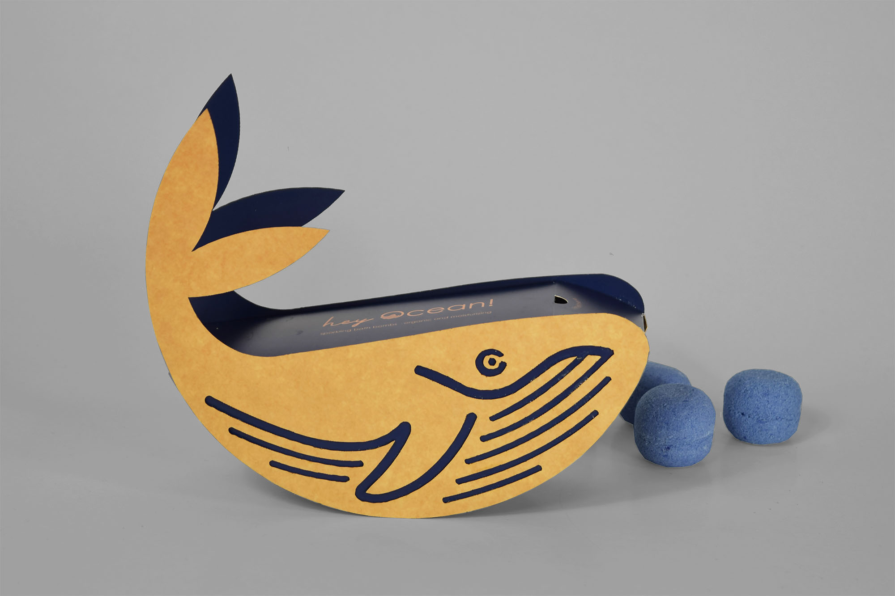
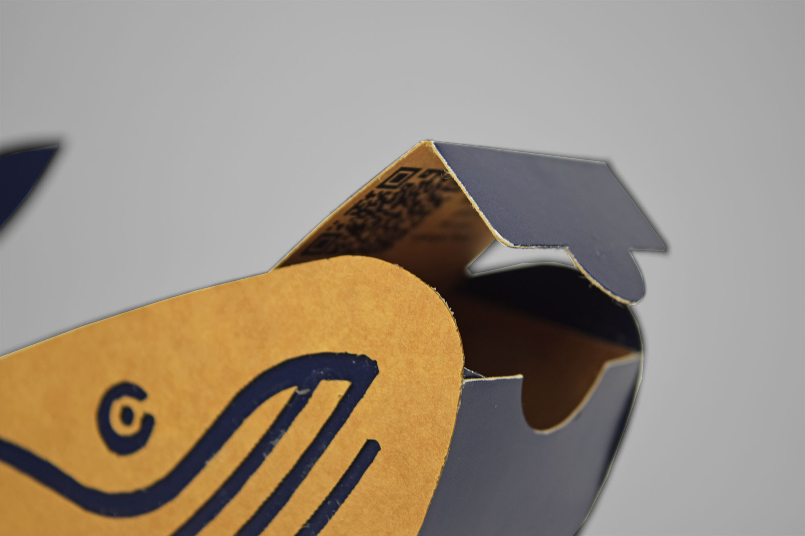

- Die Aufgabe des PIDA 2021 war es eine nachhaltige Verpackung zu entwerfen, welche die Sinne erweckt und neue Technologien wie Augmented Reality inkludiert. Das Ergebnis ist eine Verpackung in Form eines Wals, der auf seinem Bauch schaukeln kann.
- Herausforderungen
- Die Schwierigkeit des Projektes lag darin eine außergewöhnliche Verpackung zu entwickeln, die gleichzeitig nachhaltig ist.
- Lösungsansatz
- Das Produkt in seiner Verpackung soll die Käufer, in den Coronazeiten, dazu animieren zu Hause zu bleiben und das Bad als Alternative zum Urlaub anzusehen. Ein scannbarer QR-Code führt zu einer Playlist mit Liedern von spezifischen Küstenregionen.
- Auftrag: Entwicklung einer Verpackung für Badebomben
- Entstehung: Gruppenarbeit für Teilnahme am Packaging Impact Design Award
- Auszeichnung: Highest Level of User friendliness
- Datum: Mai 2021


